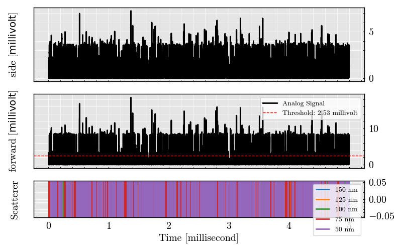
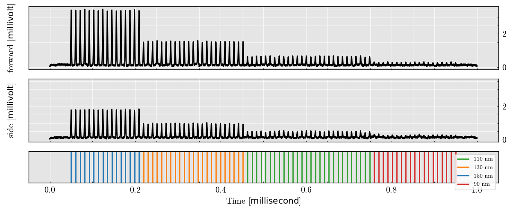

Note
Go to the end to download the full example code.
Limit of detection#
- 
- 

<seaborn.axisgrid.JointGrid object at 0x7f07f673b2d0>
import numpy as np
from FlowCyPy import FlowCytometer, ScattererCollection, Detector, GaussianBeam, FlowCell
from FlowCyPy import units
from FlowCyPy import NoiseSetting
from FlowCyPy import Population, distribution
from FlowCyPy.signal_digitizer import SignalDigitizer
NoiseSetting.include_noises = True
NoiseSetting.include_shot_noise = True
NoiseSetting.include_RIN_noise = False
NoiseSetting.include_dark_current_noise = False
NoiseSetting.include_thermal_noise = False
np.random.seed(3)
source = GaussianBeam(
numerical_aperture=0.3 * units.AU, # Numerical aperture of the laser: 0.3
wavelength=488 * units.nanometer, # Laser wavelength: 800 nanometers
optical_power=100 * units.milliwatt # Laser optical power: 10 milliwatts
)
flow_cell = FlowCell(
source=source,
volume_flow=10 * units.microliter / units.second, # Flow volume speed: 10 microliter per second
flow_area=(10 * units.micrometer) ** 2, # Flow area: 10 x 10 micrometers
)
scatterer_collection = ScattererCollection(medium_refractive_index=1.33 * units.RIU) # Medium refractive index: 1.33
for size in [150, 100, 50, 30]:
population = Population(
name=f'{size} nanometer',
particle_count=20 * units.particle,
size=distribution.Delta(position=size * units.nanometer),
refractive_index=distribution.Delta(position=1.39 * units.RIU)
)
scatterer_collection.add_population(population)
signal_digitizer = SignalDigitizer(
bit_depth='14bit',
saturation_levels='auto',
sampling_freq=60 * units.megahertz, # Sampling frequency: 60 MHz
)
detector_0 = Detector(
name='side', # Detector name: Side scatter detector
phi_angle=90 * units.degree, # Angle: 90 degrees (Side Scatter)
numerical_aperture=.2 * units.AU, # Numerical aperture: 1.2
responsitivity=1 * units.ampere / units.watt, # Responsitivity: 1 ampere per watt
resistance=13000 * units.ohm, # Detector resistance: 50 ohms
dark_current=0.01 * units.milliampere, # Dark current: 0.1 milliamps
temperature=300 * units.kelvin # Operating temperature: 300 Kelvin
)
detector_1 = Detector(
name='forward', # Detector name: Forward scatter detector
phi_angle=0 * units.degree, # Angle: 0 degrees (Forward Scatter)
numerical_aperture=.2 * units.AU, # Numerical aperture: 1.2
responsitivity=1 * units.ampere / units.watt, # Responsitivity: 1 ampere per watt
resistance=13000 * units.ohm, # Detector resistance: 50 ohms
dark_current=0.01 * units.milliampere, # Dark current: 0.1 milliamps
temperature=300 * units.kelvin # Operating temperature: 300 Kelvin
)
cytometer = FlowCytometer(
signal_digitizer=signal_digitizer,
scatterer_collection=scatterer_collection,
flow_cell=flow_cell, # Populations used in the experiment
background_power=0.0 * units.milliwatt,
detectors=[detector_0, detector_1] # List of detectors: Side scatter and Forward scatter
)
# Run the flow cytometry simulation
experiment = cytometer.get_acquisition(run_time=0.2 * units.millisecond)
# Visualize the scatter signals from both detectors
experiment.plot.signals()
experiment.run_triggering(
threshold=3 * units.millivolt,
trigger_detector_name='forward',
max_triggers=15,
pre_buffer=64,
post_buffer=64
)
experiment.plot.trigger()
experiment.plot.peaks(
x_detector='side',
y_detector='forward'
)
Total running time of the script: (0 minutes 6.606 seconds)